Wk07: Data Visualization with ggplot2
Learning Objectives
- Produce scatter plots, boxplots, and time series plots using ggplot.
- Describe what faceting is and apply faceting in ggplot.
- Set universal plot settings.
- Learn some basic visualization dos and don’ts
- Learn how to customize color in plots
- Gain a basic understanding of package
cowplot - Introduction to interactive
plotlypackage
Videos
In Class Coding
Add a package check/install code block after the YAML header.
Part 1: Building Plots with ggplot2
We start by loading the required packages.
ggplot2 is included in the
tidyverse package.
library(tidyverse)Let’s read in our surveys data, but filter it to only get back rows
where ALL the data are present, also known as “complete cases”. We’re
also showing you a new little trick: using a period with a pipe.
Normally, a pipe just sends the stuff on the left into the FIRST
argument position in the function on the right. However, sometimes we
want that stuff to get sent to a slightly different place in the
righthand function. In this case, we want to send it into the
complete.cases() function, so that function will run on the
whole dataset. In order to specifically tell the pipe to send the
lefthand side into this function, we put a period there. You can think
of this as the target for the pipe.
surveys_complete <- read_csv("data/portal_data_joined.csv") %>%
filter(complete.cases(.))Plotting with ggplot2
ggplot2 is a plotting package that
makes it simple to create complex plots from data in a data frame. It
provides a more programmatic interface for specifying what variables to
plot, how they are displayed, and general visual properties. Therefore,
we only need minimal changes if the underlying data change or if we
decide to change from a bar plot to a scatterplot. This helps in
creating publication quality plots with minimal amounts of adjustments
and tweaking.
ggplot2 functions like data in the
‘long’ format, i.e., a column for every dimension, and a row for every
observation. Well-structured data will save you lots of time when making
figures with ggplot2
ggplot graphics are built step by step by adding new elements. Adding layers in this fashion allows for extensive flexibility and customization of plots.
To build a ggplot, we will use the following basic template that can be used for different types of plots:
ggplot(data = <DATA>, mapping = aes(<MAPPINGS>)) + <GEOM_FUNCTION>()- use the
ggplot()function and bind the plot to a specific data frame using thedataargument
ggplot(data = surveys_complete)- define a mapping (using the aesthetic (
aes) function), by selecting the variables to be plotted and specifying how to present them in the graph, e.g. as x/y positions or characteristics such as size, shape, color, etc.
ggplot(data = surveys_complete, mapping = aes(x = weight, y = hindfoot_length))add ‘geoms’ – graphical representations of the data in the plot (points, lines, bars).
ggplot2offers many different geoms; we will use some common ones today, including:* `geom_point()` for scatter plots, dot plots, etc. * `geom_boxplot()` for, well, boxplots! * `geom_line()` for trend lines, time series, etc.
To add a geom to the plot use the + operator. Because we
have two continuous variables, let’s use geom_point()
first:
ggplot(data = surveys_complete, mapping = aes(x = weight, y = hindfoot_length)) +
geom_point()
## This is an untitled chart with no subtitle or caption.
## It has x-axis 'weight' with labels 0, 100 and 200.
## It has y-axis 'hindfoot_length' with labels 0, 20, 40 and 60.
## The chart is a set of 30676 big solid circle points of which about 4.2% can be seen.The + in the ggplot2
package is particularly useful because it allows you to modify existing
ggplot objects. This means you can easily set up plot
templates and conveniently explore different types of plots, so the
above plot can also be generated with code like this:
# Assign plot to a variable
surveys_plot <- ggplot(data = surveys_complete,
mapping = aes(x = weight, y = hindfoot_length))
# Draw the plot
surveys_plot +
geom_point()Notes
- Anything you put in the
ggplot()function can be seen by any geom layers that you add (i.e., these are universal plot settings). This includes the x- and y-axis mapping you set up inaes(). - You can also specify mappings for a given geom independently of the
mappings defined globally in the
ggplot()function. - The
+sign used to add new layers must be placed at the end of the line containing the previous layer. If, instead, the+sign is added at the beginning of the line containing the new layer,ggplot2will not add the new layer and will return an error message.
# This is the correct syntax for adding layers
surveys_plot +
geom_point()
# This will not add the new layer and will return an error message
surveys_plot
+ geom_point()Building your plots iteratively
Building plots with ggplot2 is
typically an iterative process. We start by defining the dataset we’ll
use, lay out the axes, and choose a geom:
ggplot(data = surveys_complete, mapping = aes(x = weight, y = hindfoot_length)) +
geom_point()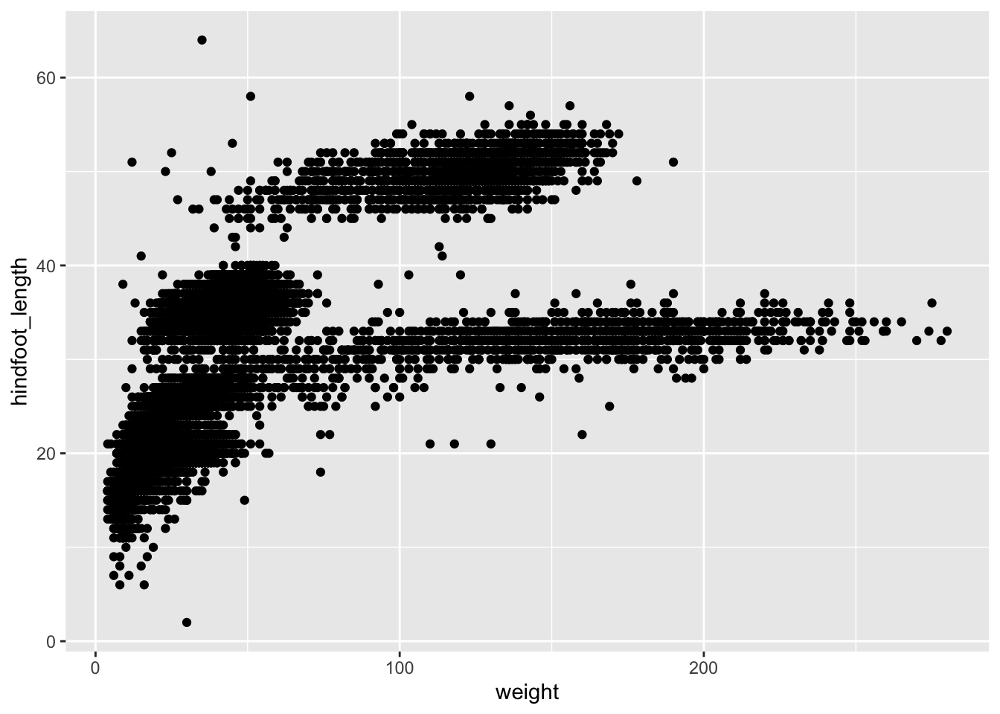
## This is an untitled chart with no subtitle or caption.
## It has x-axis 'weight' with labels 0, 100 and 200.
## It has y-axis 'hindfoot_length' with labels 0, 20, 40 and 60.
## The chart is a set of 30676 big solid circle points of which about 4.2% can be seen.Then, we start modifying this plot to extract more information from
it. For instance, we can add transparency (alpha) to avoid
overplotting:
ggplot(data = surveys_complete, mapping = aes(x = weight, y = hindfoot_length)) +
geom_point(alpha = 0.1)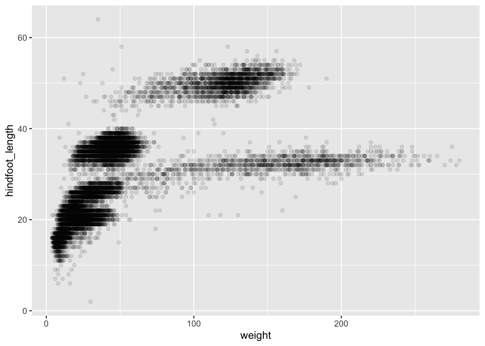
## This is an untitled chart with no subtitle or caption.
## It has x-axis 'weight' with labels 0, 100 and 200.
## It has y-axis 'hindfoot_length' with labels 0, 20, 40 and 60.
## The chart is a set of 30676 big solid circle points of which about 4.2% can be seen.
## It has alpha set to 0.1.We can also add colors for all the points:
ggplot(data = surveys_complete, mapping = aes(x = weight, y = hindfoot_length)) +
geom_point(alpha = 0.1, color = "blue")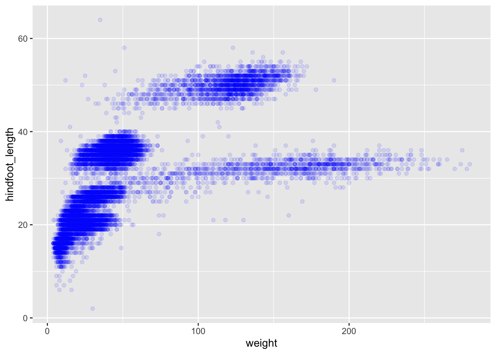
## This is an untitled chart with no subtitle or caption.
## It has x-axis 'weight' with labels 0, 100 and 200.
## It has y-axis 'hindfoot_length' with labels 0, 20, 40 and 60.
## The chart is a set of 30676 big solid circle points of which about 4.2% can be seen.
## It has alpha set to 0.1.
## It has colour set to vivid violet.Or to color each species in the plot differently, you could use a
vector as an input to the argument color.
ggplot2 will provide a different color
corresponding to different values in the vector. Here is an example
where we color with species_id:
ggplot(data = surveys_complete, mapping = aes(x = weight, y = hindfoot_length)) +
geom_point(alpha = 0.1, aes(color = species_id))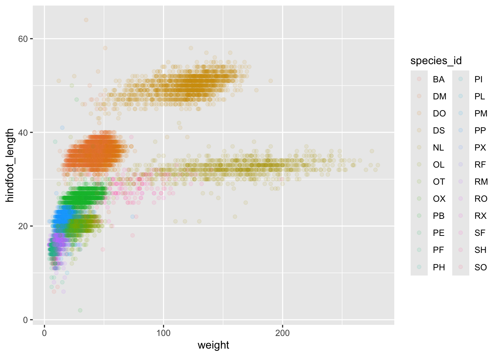
## This is an untitled chart with no subtitle or caption.
## It has x-axis 'weight' with labels 0, 100 and 200.
## It has y-axis 'hindfoot_length' with labels 0, 20, 40 and 60.
## There is a legend indicating colour is used to show species_id, with 24 levels:
## BA shown as strong reddish orange colour,
## DM shown as strong orange colour,
## DO shown as strong orange yellow colour,
## DS shown as deep orange yellow colour,
## NL shown as strong yellow colour,
## OL shown as strong greenish yellow colour,
## OT shown as vivid yellow green colour,
## OX shown as vivid yellowish green colour,
## PB shown as vivid yellowish green colour,
## PE shown as vivid yellowish green colour,
## PF shown as brilliant green colour,
## PH shown as brilliant bluish green colour,
## PI shown as brilliant bluish green colour,
## PL shown as vivid blue colour,
## PM shown as brilliant blue colour,
## PP shown as brilliant blue colour,
## PX shown as brilliant blue colour,
## RF shown as vivid violet colour,
## RM shown as vivid violet colour,
## RO shown as vivid purple colour,
## RX shown as vivid purple colour,
## SF shown as deep purplish pink colour,
## SH shown as vivid purplish red colour and
## SO shown as vivid purplish red colour.
## The chart is a set of 30676 big solid circle points of which about 4.2% can be seen.
## It has alpha set to 0.1.We can also specify the colors directly inside the mapping provided
in the ggplot() function. This will be seen by all geom
layers and the mapping will be determined by the x- and y-axis set up in
aes().
ggplot(data = surveys_complete, mapping = aes(x = weight, y = hindfoot_length, color = species_id)) +
geom_point(alpha = 0.1)
## This is an untitled chart with no subtitle or caption.
## It has x-axis 'weight' with labels 0, 100 and 200.
## It has y-axis 'hindfoot_length' with labels 0, 20, 40 and 60.
## There is a legend indicating colour is used to show species_id, with 24 levels:
## BA shown as strong reddish orange colour,
## DM shown as strong orange colour,
## DO shown as strong orange yellow colour,
## DS shown as deep orange yellow colour,
## NL shown as strong yellow colour,
## OL shown as strong greenish yellow colour,
## OT shown as vivid yellow green colour,
## OX shown as vivid yellowish green colour,
## PB shown as vivid yellowish green colour,
## PE shown as vivid yellowish green colour,
## PF shown as brilliant green colour,
## PH shown as brilliant bluish green colour,
## PI shown as brilliant bluish green colour,
## PL shown as vivid blue colour,
## PM shown as brilliant blue colour,
## PP shown as brilliant blue colour,
## PX shown as brilliant blue colour,
## RF shown as vivid violet colour,
## RM shown as vivid violet colour,
## RO shown as vivid purple colour,
## RX shown as vivid purple colour,
## SF shown as deep purplish pink colour,
## SH shown as vivid purplish red colour and
## SO shown as vivid purplish red colour.
## The chart is a set of 30676 big solid circle points of which about 4.2% can be seen.
## It has alpha set to 0.1.Notice that we can change the geom layer and colors will be still
determined by species_id
Challenge
Use ggplot() to create a scatter plot of
weight and species_id with weight on the
Y-axis, and species_id on the X-axis. Have the colors be coded by
plot_type. Is this a good way to show this type of data?
What might be a better graph?
ANSWER
ggplot(data = surveys_complete, mapping = aes(x = species_id, y = weight)) +
geom_point(aes(color = plot_type))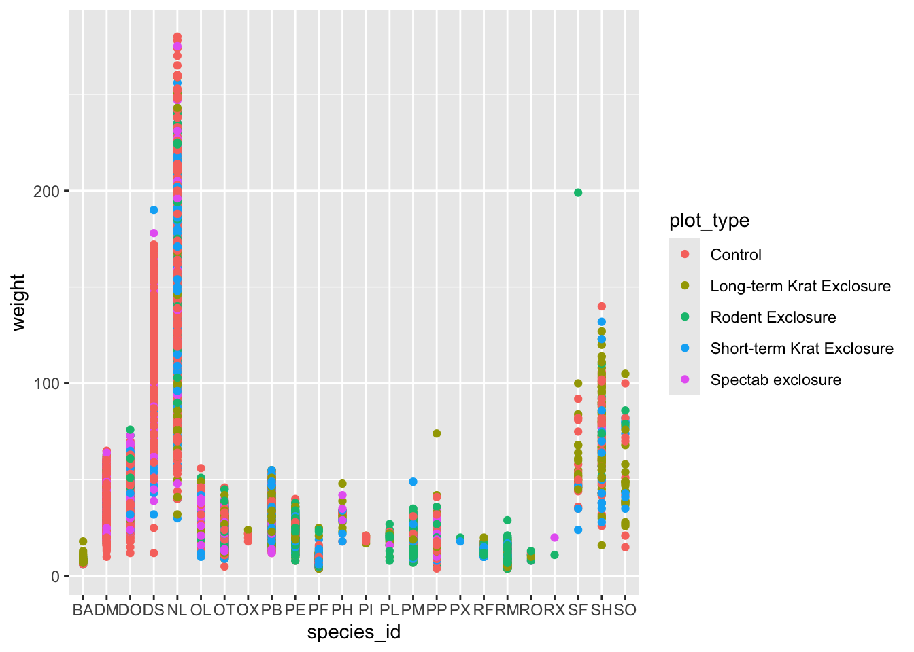
## This is an untitled chart with no subtitle or caption.
## It has x-axis 'species_id' with labels BA, DM, DO, DS, NL, OL, OT, OX, PB, PE, PF, PH, PI, PL, PM, PP, PX, RF, RM, RO, RX, SF, SH and SO.
## It has y-axis 'weight' with labels 0, 100 and 200.
## There is a legend indicating colour is used to show plot_type, with 5 levels:
## Control shown as strong reddish orange colour,
## Long-term Krat Exclosure shown as strong greenish yellow colour,
## Rodent Exclosure shown as vivid yellowish green colour,
## Short-term Krat Exclosure shown as brilliant blue colour and
## Spectab exclosure shown as vivid purple colour.
## The chart is a set of 30676 big solid circle points of which about 1.1% can be seen.Boxplot
We can use boxplots to visualize the distribution of weight within each species:
ggplot(data = surveys_complete, mapping = aes(x = species_id, y = weight)) +
geom_boxplot()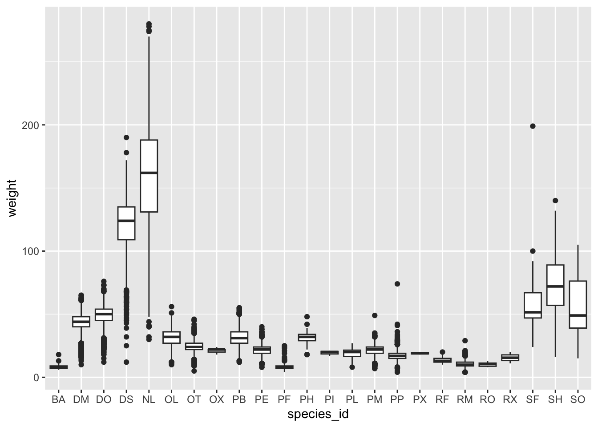
## This is an untitled chart with no subtitle or caption.
## It has x-axis 'species_id' with labels BA, DM, DO, DS, NL, OL, OT, OX, PB, PE, PF, PH, PI, PL, PM, PP, PX, RF, RM, RO, RX, SF, SH and SO.
## It has y-axis 'weight' with labels 0, 100 and 200.
## The chart is a boxplot comprised of 24 vertical boxes with whiskers.By adding points to boxplot, we can have a better idea of the number of measurements and of their distribution.
Let’s also use the geometry “jitter”. geom_jitter is
almost like geom_point but it allows you to visualize how
the density of points because it adds a small amount of random variation
to the location of each point.
ggplot(data = surveys_complete, mapping = aes(x = species_id, y = weight)) +
geom_boxplot(alpha = 0) +
geom_jitter(alpha = 0.3, color = "tomato") #notice our color needs to be in quotations 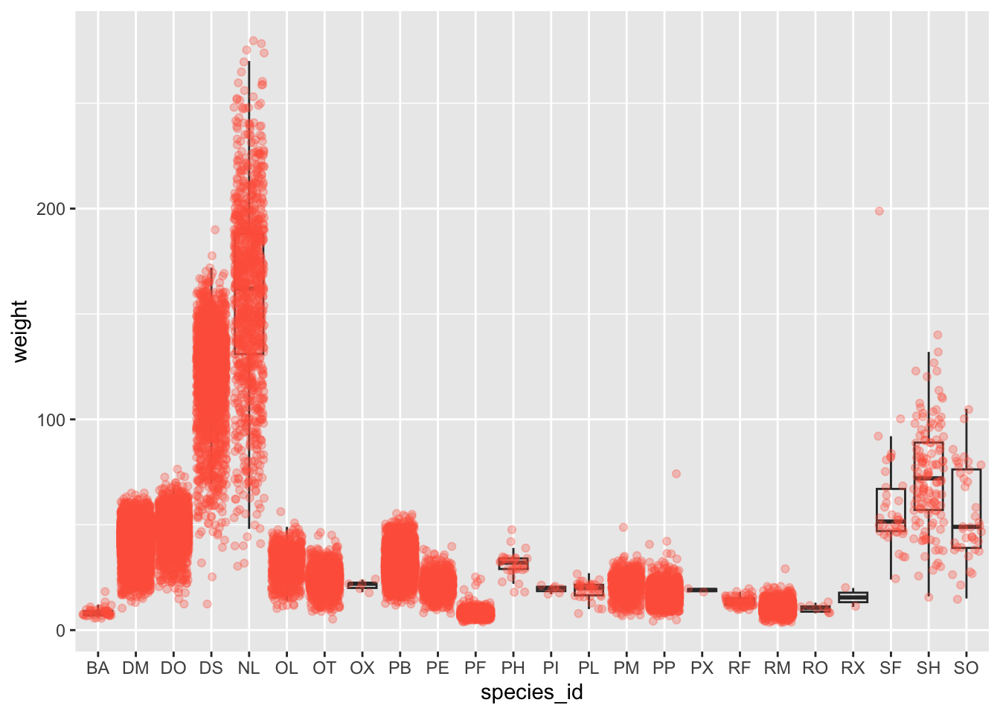
## This is an untitled chart with no subtitle or caption.
## It has x-axis 'species_id' with labels BA, DM, DO, DS, NL, OL, OT, OX, PB, PE, PF, PH, PI, PL, PM, PP, PX, RF, RM, RO, RX, SF, SH and SO.
## It has y-axis 'weight' with labels 0, 100 and 200.
## It has 2 layers.
## Layer 1 is a boxplot comprised of 24 vertical boxes with whiskers.
## Layer 1 has alpha set to 0.
## Layer 2 is a set of 30676 big solid circle points of which about 3.8% can be seen.
## Layer 2 has alpha set to 0.3.
## Layer 2 has colour set to vivid reddish orange.Notice how the boxplot layer is behind the jitter layer? What do you need to change in the code to put the boxplot in front of the points such that it’s not hidden?
Challenges
- Boxplots are useful summaries, but hide the shape of the distribution. For example, if the distribution is bimodal, we would not see it in a boxplot. An alternative to the boxplot is the violin plot, where the shape (of the density of points) is drawn.
- Replace the box plot code from above with a violin plot; see
geom_violin().
- In many types of data, it is important to consider the scale of the observations. For example, it may be worth changing the scale of the axis to better distribute the observations in the space of the plot. Changing the scale of the axes is done similarly to adding/modifying other components (i.e., by incrementally adding commands). Try making these modifications:
- Use the violin plot you made in Q1 and adjust the weight to be on
the log10 scale; see
scale_y_log10().
- Make a new plot to explore the distribution of
hindfoot_lengthjust for species NL and PF usinggeom_boxplot(). Overlay a jitter/scatter plot of the hindfoot lengths of the two species behind the boxplots. Then, add anaes()argument to color the datapoints (but not the boxplots) according to the plot from which the sample was taken.
Hint: Check the class for plot_id. Consider
changing the class of plot_id from integer to factor. Why
does this change how R makes the graph?
ANSWER
#1 + 2
ggplot(data = surveys_complete, mapping = aes(x = species_id, y = weight)) +
geom_jitter(alpha = 0.3, color = "tomato") +
geom_violin(alpha = 0) +
scale_y_log10()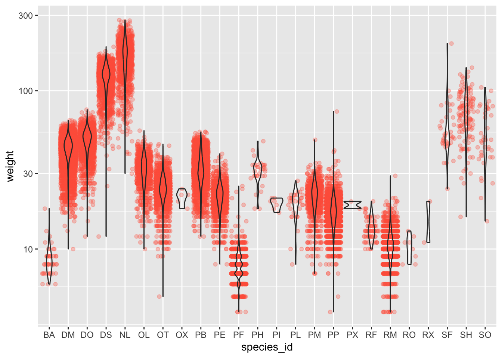
## This is an untitled chart with no subtitle or caption.
## It has x-axis 'species_id' with labels BA, DM, DO, DS, NL, OL, OT, OX, PB, PE, PF, PH, PI, PL, PM, PP, PX, RF, RM, RO, RX, SF, SH and SO.
## It has y-axis 'weight' with labels 10, 30, 100 and 300.
## It has 2 layers.
## Layer 1 is a set of 30676 big solid circle points of which about 5% can be seen.
## Layer 1 has alpha set to 0.3.
## Layer 1 has colour set to vivid reddish orange.
## Layer 2 is a violin graph that VI cannot process.
## Layer 2 has alpha set to 0.#3
surveys_complete %>%
filter(species_id == "NL" | species_id == "PF") %>%
ggplot(mapping = aes(x= species_id, y = hindfoot_length)) +
geom_jitter(alpha = 0.3, aes(color = as.factor(plot_id))) +
geom_boxplot()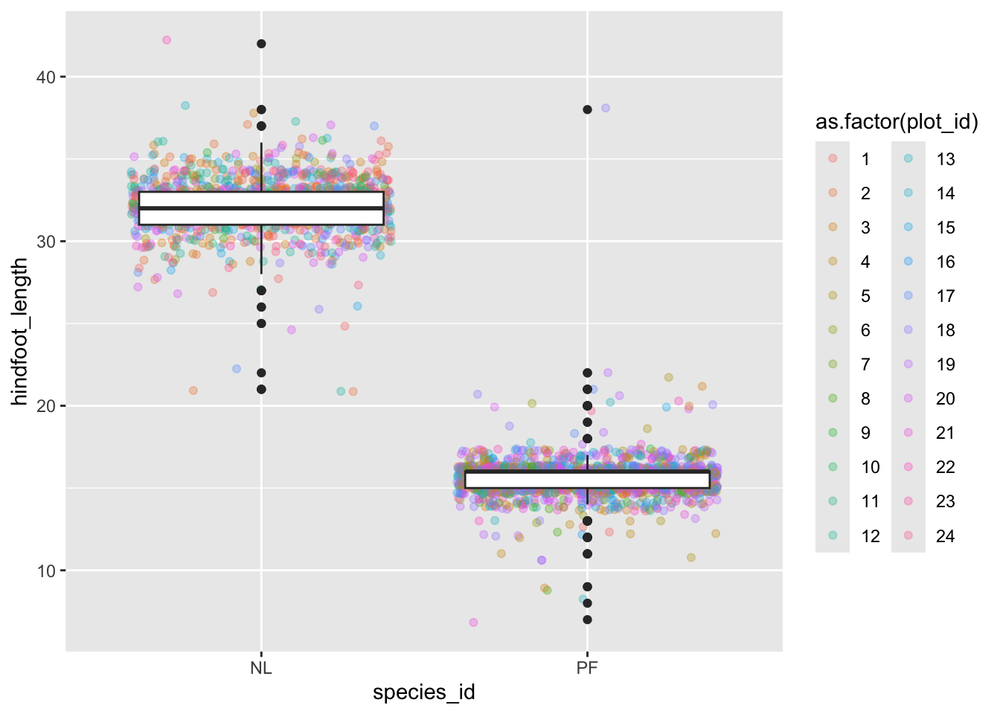
## This is an untitled chart with no subtitle or caption.
## It has x-axis 'species_id' with labels NL and PF.
## It has y-axis 'hindfoot_length' with labels 10, 20, 30 and 40.
## There is a legend indicating colour is used to show as.factor(plot_id), with 24 levels:
## 1 shown as strong reddish orange colour,
## 2 shown as strong orange colour,
## 3 shown as strong orange yellow colour,
## 4 shown as deep orange yellow colour,
## 5 shown as strong yellow colour,
## 6 shown as strong greenish yellow colour,
## 7 shown as vivid yellow green colour,
## 8 shown as vivid yellowish green colour,
## 9 shown as vivid yellowish green colour,
## 10 shown as vivid yellowish green colour,
## 11 shown as brilliant green colour,
## 12 shown as brilliant bluish green colour,
## 13 shown as brilliant bluish green colour,
## 14 shown as vivid blue colour,
## 15 shown as brilliant blue colour,
## 16 shown as brilliant blue colour,
## 17 shown as brilliant blue colour,
## 18 shown as vivid violet colour,
## 19 shown as vivid violet colour,
## 20 shown as vivid purple colour,
## 21 shown as vivid purple colour,
## 22 shown as deep purplish pink colour,
## 23 shown as vivid purplish red colour and
## 24 shown as vivid purplish red colour.
## It has 2 layers.
## Layer 1 is a set of 2514 big solid circle points of which about 40% can be seen.
## These are offset by added random noise, and sorted by as.factor(plot_id).
## Layer 1 has alpha set to 0.3.
## Layer 2 is a boxplot comprised of 2 vertical boxes with whiskers.
## There is a box at x=1.
## It has median 32. The box goes from 31 to 33, and the whiskers extend to 28 and 36.
## There are 7 max and 13 min outliers for this boxplot.
## There is a box at x=2.
## It has median 16. The box goes from 15 to 16, and the whiskers extend to 14 and 17.
## There are 23 max and 28 min outliers for this boxplot.Plotting time series data
Let’s calculate number of counts per year for each species. First we
need to group the data and count records within each group. We can
quickly use the dplyr function count to do this.
count is very similar to the function tally we
have seen before, but it interally calls group_by before
the function and ungroup after.
yearly_counts <- surveys_complete %>%
count(year, species_id) Time series data can be visualized as a line plot with years on the x axis and counts on the y axis:
ggplot(data = yearly_counts, mapping = aes(x = year, y = n)) +
geom_line()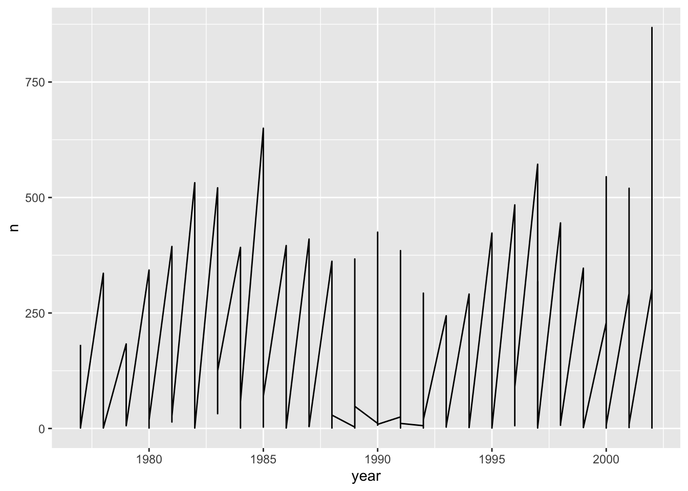
## This is an untitled chart with no subtitle or caption.
## It has x-axis 'year' with labels 1980, 1985, 1990, 1995 and 2000.
## It has y-axis 'n' with labels 0, 250, 500 and 750.
## The chart is a set of 1 line.
## Line 1 connects 332 points.Unfortunately, this does not work because we plotted data for all the
species together. We need to tell ggplot to draw a line for each species
by modifying the aesthetic function to include
group = species_id:
ggplot(data = yearly_counts, mapping = aes(x = year, y = n, group = species_id)) +
geom_line()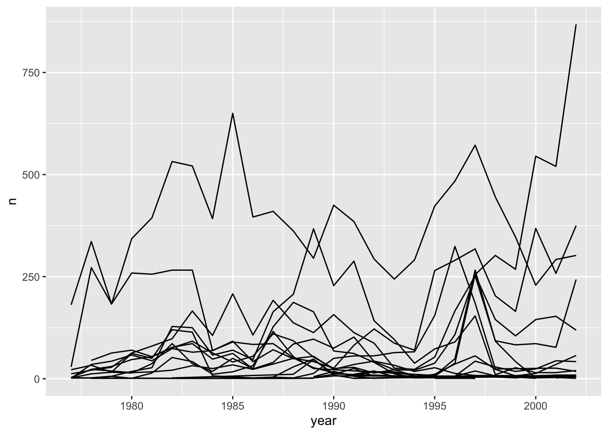
## This is an untitled chart with no subtitle or caption.
## It has x-axis 'year' with labels 1980, 1985, 1990, 1995 and 2000.
## It has y-axis 'n' with labels 0, 250, 500 and 750.
## The chart is a set of 24 lines.We will be able to distinguish species in the plot if we add colors
(using color also automatically groups the data):
ggplot(data = yearly_counts, mapping = aes(x = year, y = n, color = species_id)) +
geom_line()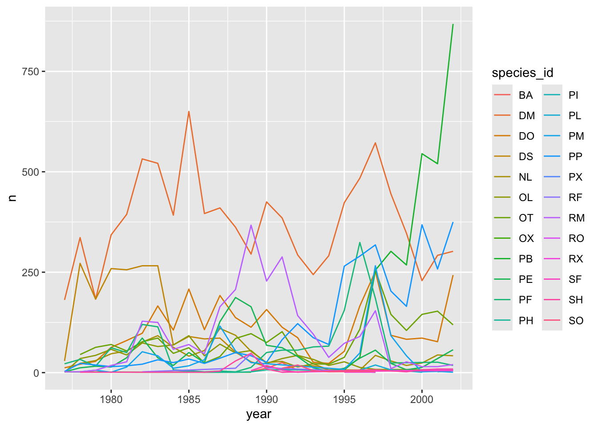
## This is an untitled chart with no subtitle or caption.
## It has x-axis 'year' with labels 1980, 1985, 1990, 1995 and 2000.
## It has y-axis 'n' with labels 0, 250, 500 and 750.
## There is a legend indicating colour is used to show species_id, with 24 levels:
## BA shown as strong reddish orange colour,
## DM shown as strong orange colour,
## DO shown as strong orange yellow colour,
## DS shown as deep orange yellow colour,
## NL shown as strong yellow colour,
## OL shown as strong greenish yellow colour,
## OT shown as vivid yellow green colour,
## OX shown as vivid yellowish green colour,
## PB shown as vivid yellowish green colour,
## PE shown as vivid yellowish green colour,
## PF shown as brilliant green colour,
## PH shown as brilliant bluish green colour,
## PI shown as brilliant bluish green colour,
## PL shown as vivid blue colour,
## PM shown as brilliant blue colour,
## PP shown as brilliant blue colour,
## PX shown as brilliant blue colour,
## RF shown as vivid violet colour,
## RM shown as vivid violet colour,
## RO shown as vivid purple colour,
## RX shown as vivid purple colour,
## SF shown as deep purplish pink colour,
## SH shown as vivid purplish red colour and
## SO shown as vivid purplish red colour.
## The chart is a set of 24 lines.Faceting
ggplot2 has a special technique called
faceting that allows the user to split one plot into multiple
plots based on a factor included in the dataset. We will use it to make
a time series plot for each species:
ggplot(data = yearly_counts, mapping = aes(x = year, y = n)) +
geom_line() +
facet_wrap(~ species_id)## `geom_line()`: Each group consists of only one observation.
## ℹ Do you need to adjust the group aesthetic?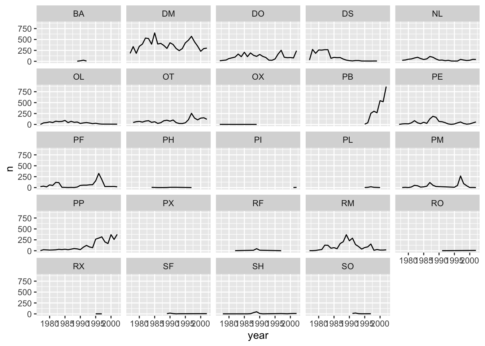
## This is an untitled chart with no subtitle or caption.
## The chart is comprised of 24 panels containing sub-charts, arranged horizontally.
## The panels represent different values of species_id.
## Each sub-chart has x-axis 'year' with labels 1980, 1985, 1990, 1995 and 2000.
## Each sub-chart has y-axis 'n' with labels 0, 250, 500 and 750.
## Panel 1 represents data for species_id = BA.
## Panel 1 is a set of 1 line.
## Line 1 connects 4 points, at (1989, 3), (1990, 11), (1991, 25) and (1992, 6).
## Panel 2 represents data for species_id = DM.
## Panel 2 is a set of 1 line.
## Line 1 connects 26 points.
## Panel 3 represents data for species_id = DO.
## Panel 3 is a set of 1 line.
## Line 1 connects 26 points.
## Panel 4 represents data for species_id = DS.
## Panel 4 is a set of 1 line.
## Line 1 connects 21 points.
## Panel 5 represents data for species_id = NL.
## Panel 5 is a set of 1 line.
## Line 1 connects 25 points.
## Panel 6 represents data for species_id = OL.
## Panel 6 is a set of 1 line.
## Line 1 connects 22 points.
## Panel 7 represents data for species_id = OT.
## Panel 7 is a set of 1 line.
## Line 1 connects 25 points.
## Panel 8 represents data for species_id = OX.
## Panel 8 is a set of 1 line.
## Line 1 connects 4 points, at (1977, 2), (1982, 1), (1984, 1) and (1989, 1).
## Panel 9 represents data for species_id = PB.
## Panel 9 is a set of 1 line.
## Line 1 connects 8 points, at (1995, 7), (1996, 38), (1997, 255), (1998, 302), (1999, 268), (2000, 545), (2001, 520) and (2002, 868).
## Panel 10 represents data for species_id = PE.
## Panel 10 is a set of 1 line.
## Line 1 connects 26 points.
## Panel 11 represents data for species_id = PF.
## Panel 11 is a set of 1 line.
## Line 1 connects 23 points.
## Panel 12 represents data for species_id = PH.
## Panel 12 is a set of 1 line.
## Line 1 connects 9 points, at (1984, 6), (1985, 3), (1986, 1), (1988, 1), (1989, 2), (1990, 7), (1992, 7), (1995, 3) and (1997, 1).
## Panel 13 represents data for species_id = PI.
## Panel 13 is a set of 1 line.
## Line 1 connects 2 points, at (2001, 2) and (2002, 5).
## Panel 14 represents data for species_id = PL.
## Panel 14 is a set of 1 line.
## Line 1 connects 5 points, at (1995, 2), (1996, 6), (1997, 19), (1998, 7) and (2000, 1).
## Panel 15 represents data for species_id = PM.
## Panel 15 is a set of 1 line.
## Line 1 connects 20 points.
## Panel 16 represents data for species_id = PP.
## Panel 16 is a set of 1 line.
## Line 1 connects 26 points.
## Panel 17 represents data for species_id = PX.
## Panel 17 is a set of 1 line.
## Line 1 connects 1 points, at (1997, 2).
## Panel 18 represents data for species_id = RF.
## Panel 18 is a set of 1 line.
## Line 1 connects 5 points, at (1982, 2), (1988, 11), (1989, 47), (1990, 12) and (1997, 1).
## Panel 19 represents data for species_id = RM.
## Panel 19 is a set of 1 line.
## Line 1 connects 26 points.
## Panel 20 represents data for species_id = RO.
## Panel 20 is a set of 1 line.
## Line 1 connects 2 points, at (1991, 1) and (2002, 7).
## Panel 21 represents data for species_id = RX.
## Panel 21 is a set of 1 line.
## Line 1 connects 2 points, at (1995, 1) and (1997, 1).
## Panel 22 represents data for species_id = SF.
## Panel 22 is a set of 1 line.
## Line 1 connects 6 points, at (1989, 5), (1990, 18), (1991, 6), (1992, 1), (1993, 3) and (2002, 5).
## Panel 23 represents data for species_id = SH.
## Panel 23 is a set of 1 line.
## Line 1 connects 13 points.
## Panel 24 represents data for species_id = SO.
## Panel 24 is a set of 1 line.
## Line 1 connects 5 points, at (1991, 11), (1992, 19), (1993, 5), (1994, 2) and (1997, 3).Challenge
You are looking at a new dataset shared with you by a collaborator. You received the dataset shortly after the vernal equinox. Your collaborator didn’t really give you any context on what the data represent, and you need to do some preliminary visualizations before you can really even formulate a question for them. Import the mystery dataset using:
mystery <- read_csv("https://raw.githubusercontent.com/gge-ucd/R-DAVIS/master/data/mysteryData.csv")## Rows: 91325 Columns: 3
## ── Column specification ───────────────────────────────────────
## Delimiter: ","
## chr (1): Group
## dbl (2): x, y
##
## ℹ Use `spec()` to retrieve the full column specification for this data.
## ℹ Specify the column types or set `show_col_types = FALSE` to quiet this message.Can you figure out what this dataset represents?
Hint Use your new knowledge of faceting to break up the data
into groups, and consider changing the size and transparency of your
geom_’s to get a better look!
ANSWER
# Preview the data
mystery %>%
head(5)## # A tibble: 5 × 3
## x y Group
## <dbl> <dbl> <chr>
## 1 414. 282. A
## 2 412. 281. A
## 3 414. 281. A
## 4 26.2 275. A
## 5 33.9 275. A# Plot the data
ggplot(data = mystery, mapping = aes(x = x, y = y)) +
facet_wrap(~ Group) +
geom_point(size = 0.1, alpha = 0.01) 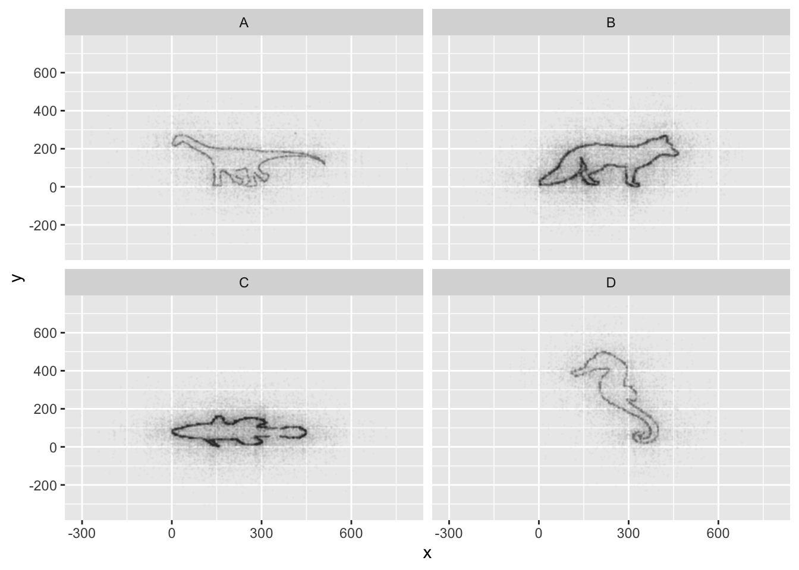
## This is an untitled chart with no subtitle or caption.
## The chart is comprised of 4 panels containing sub-charts, arranged horizontally.
## The panels represent different values of Group.
## Each sub-chart has x-axis 'x' with labels -300, 0, 300 and 600.
## Each sub-chart has y-axis 'y' with labels -200, 0, 200, 400 and 600.
## Panel 1 represents data for Group = A.
## Panel 1 is a set of 13481 big solid circle points of which about 41% can be seen.
## It has size set to 0.1.
## It has alpha set to 0.01.
## Panel 2 represents data for Group = B.
## Panel 2 is a set of 33033 big solid circle points of which about 25% can be seen.
## It has size set to 0.1.
## It has alpha set to 0.01.
## Panel 3 represents data for Group = C.
## Panel 3 is a set of 31083 big solid circle points of which about 26% can be seen.
## It has size set to 0.1.
## It has alpha set to 0.01.
## Panel 4 represents data for Group = D.
## Panel 4 is a set of 13728 big solid circle points of which about 41% can be seen.
## It has size set to 0.1.
## It has alpha set to 0.01.If all went well, and you faceted by group, set points to be very
small, and transparency to be very high (i.e., a low alpha
setting), you should discover that each group is the outline of a
different animal! You may notice that there is some distortion going on,
and our foxy friend in Group B appears to have some thick thighs. Try
equalizing the coordinate space in the x- and y-axes by adding a
coord_equal() to your ggplot() call:
## Equalize coordinate mapping
ggplot(data = mystery, mapping = aes(x = x, y = y)) +
facet_wrap(~ Group) +
geom_point(size = 0.1, alpha = 0.01) +
coord_equal()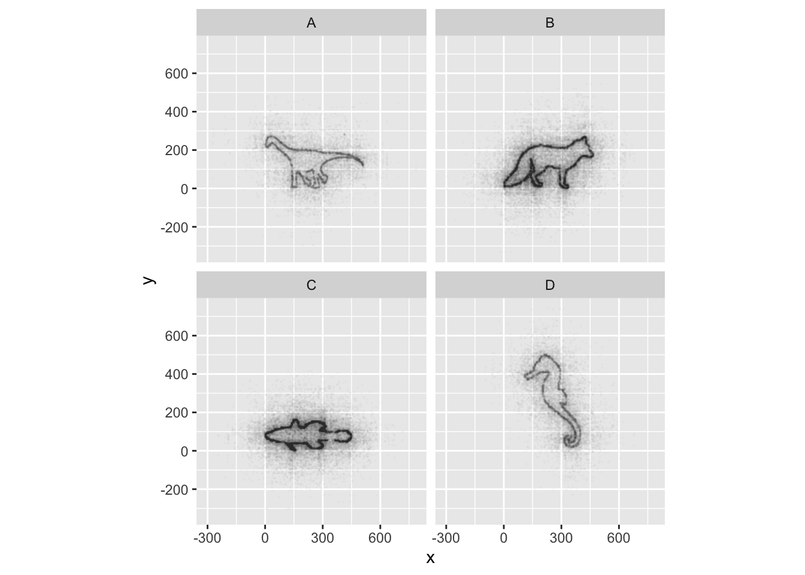
## This is an untitled chart with no subtitle or caption.
## The chart is comprised of 4 panels containing sub-charts, arranged horizontally.
## The panels represent different values of Group.
## Each sub-chart has x-axis 'x' with labels -300, 0, 300 and 600.
## Each sub-chart has y-axis 'y' with labels -200, 0, 200, 400 and 600.
## Panel 1 represents data for Group = A.
## Panel 1 is a set of 13481 big solid circle points of which about 41% can be seen.
## It has size set to 0.1.
## It has alpha set to 0.01.
## Panel 2 represents data for Group = B.
## Panel 2 is a set of 33033 big solid circle points of which about 25% can be seen.
## It has size set to 0.1.
## It has alpha set to 0.01.
## Panel 3 represents data for Group = C.
## Panel 3 is a set of 31083 big solid circle points of which about 26% can be seen.
## It has size set to 0.1.
## It has alpha set to 0.01.
## Panel 4 represents data for Group = D.
## Panel 4 is a set of 13728 big solid circle points of which about 41% can be seen.
## It has size set to 0.1.
## It has alpha set to 0.01.This challenge was inspired by Trevor Branch’s Coelocanth post on Twitter and adapted by Christian John.
ggplot2 themes
ggplot Themes are a great, easy addition that can make all your plots more readable (and a lot more pretty!)
In addition to theme_bw(), which changes the plot
background to white, ggplot2 comes with
several other themes which can be useful to quickly change the look of
your visualization. The complete list of themes is available at http://docs.ggplot2.org/current/ggtheme.html.
theme_minimal() and theme_light() are popular,
and theme_void() can be useful as a starting point to
create a new hand-crafted theme.
Usually plots with white background look more readable when printed.
We can set the background to white using the function
theme_bw(). Additionally, you can remove the grid:
ggplot(data = yearly_counts, mapping = aes(x = year, y = n)) +
geom_line() +
facet_wrap(~ species_id) +
theme_bw() +
theme(panel.grid = element_blank())## `geom_line()`: Each group consists of only one observation.
## ℹ Do you need to adjust the group aesthetic?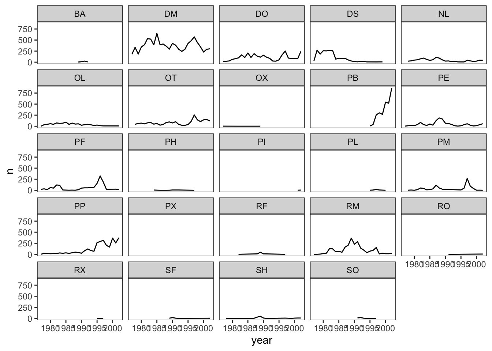
## This is an untitled chart with no subtitle or caption.
## The chart is comprised of 24 panels containing sub-charts, arranged horizontally.
## The panels represent different values of species_id.
## Each sub-chart has x-axis 'year' with labels 1980, 1985, 1990, 1995 and 2000.
## Each sub-chart has y-axis 'n' with labels 0, 250, 500 and 750.
## Panel 1 represents data for species_id = BA.
## Panel 1 is a set of 1 line.
## Line 1 connects 4 points, at (1989, 3), (1990, 11), (1991, 25) and (1992, 6).
## Panel 2 represents data for species_id = DM.
## Panel 2 is a set of 1 line.
## Line 1 connects 26 points.
## Panel 3 represents data for species_id = DO.
## Panel 3 is a set of 1 line.
## Line 1 connects 26 points.
## Panel 4 represents data for species_id = DS.
## Panel 4 is a set of 1 line.
## Line 1 connects 21 points.
## Panel 5 represents data for species_id = NL.
## Panel 5 is a set of 1 line.
## Line 1 connects 25 points.
## Panel 6 represents data for species_id = OL.
## Panel 6 is a set of 1 line.
## Line 1 connects 22 points.
## Panel 7 represents data for species_id = OT.
## Panel 7 is a set of 1 line.
## Line 1 connects 25 points.
## Panel 8 represents data for species_id = OX.
## Panel 8 is a set of 1 line.
## Line 1 connects 4 points, at (1977, 2), (1982, 1), (1984, 1) and (1989, 1).
## Panel 9 represents data for species_id = PB.
## Panel 9 is a set of 1 line.
## Line 1 connects 8 points, at (1995, 7), (1996, 38), (1997, 255), (1998, 302), (1999, 268), (2000, 545), (2001, 520) and (2002, 868).
## Panel 10 represents data for species_id = PE.
## Panel 10 is a set of 1 line.
## Line 1 connects 26 points.
## Panel 11 represents data for species_id = PF.
## Panel 11 is a set of 1 line.
## Line 1 connects 23 points.
## Panel 12 represents data for species_id = PH.
## Panel 12 is a set of 1 line.
## Line 1 connects 9 points, at (1984, 6), (1985, 3), (1986, 1), (1988, 1), (1989, 2), (1990, 7), (1992, 7), (1995, 3) and (1997, 1).
## Panel 13 represents data for species_id = PI.
## Panel 13 is a set of 1 line.
## Line 1 connects 2 points, at (2001, 2) and (2002, 5).
## Panel 14 represents data for species_id = PL.
## Panel 14 is a set of 1 line.
## Line 1 connects 5 points, at (1995, 2), (1996, 6), (1997, 19), (1998, 7) and (2000, 1).
## Panel 15 represents data for species_id = PM.
## Panel 15 is a set of 1 line.
## Line 1 connects 20 points.
## Panel 16 represents data for species_id = PP.
## Panel 16 is a set of 1 line.
## Line 1 connects 26 points.
## Panel 17 represents data for species_id = PX.
## Panel 17 is a set of 1 line.
## Line 1 connects 1 points, at (1997, 2).
## Panel 18 represents data for species_id = RF.
## Panel 18 is a set of 1 line.
## Line 1 connects 5 points, at (1982, 2), (1988, 11), (1989, 47), (1990, 12) and (1997, 1).
## Panel 19 represents data for species_id = RM.
## Panel 19 is a set of 1 line.
## Line 1 connects 26 points.
## Panel 20 represents data for species_id = RO.
## Panel 20 is a set of 1 line.
## Line 1 connects 2 points, at (1991, 1) and (2002, 7).
## Panel 21 represents data for species_id = RX.
## Panel 21 is a set of 1 line.
## Line 1 connects 2 points, at (1995, 1) and (1997, 1).
## Panel 22 represents data for species_id = SF.
## Panel 22 is a set of 1 line.
## Line 1 connects 6 points, at (1989, 5), (1990, 18), (1991, 6), (1992, 1), (1993, 3) and (2002, 5).
## Panel 23 represents data for species_id = SH.
## Panel 23 is a set of 1 line.
## Line 1 connects 13 points.
## Panel 24 represents data for species_id = SO.
## Panel 24 is a set of 1 line.
## Line 1 connects 5 points, at (1991, 11), (1992, 19), (1993, 5), (1994, 2) and (1997, 3).Challenge 1
Let’s make one final change to our facet wrapped plot of our yearly count data. What if we wanted to split the counts of species up by sex where the lines for each sex are different colors? Make sure you have a nice theme on your graph too!
Hint Make a new dataframe using the count
function we learned earlier!
ANSWER
#new data frame counting the number of each sex of each species
yearly_sex_counts <- surveys_complete %>%
count(year, species_id, sex)
#plot code
ggplot(data = yearly_sex_counts, mapping = aes(x = year, y = n, color = sex)) +
geom_line() +
facet_wrap(~ species_id) +
theme_bw()## `geom_line()`: Each group consists of only one observation.
## ℹ Do you need to adjust the group aesthetic?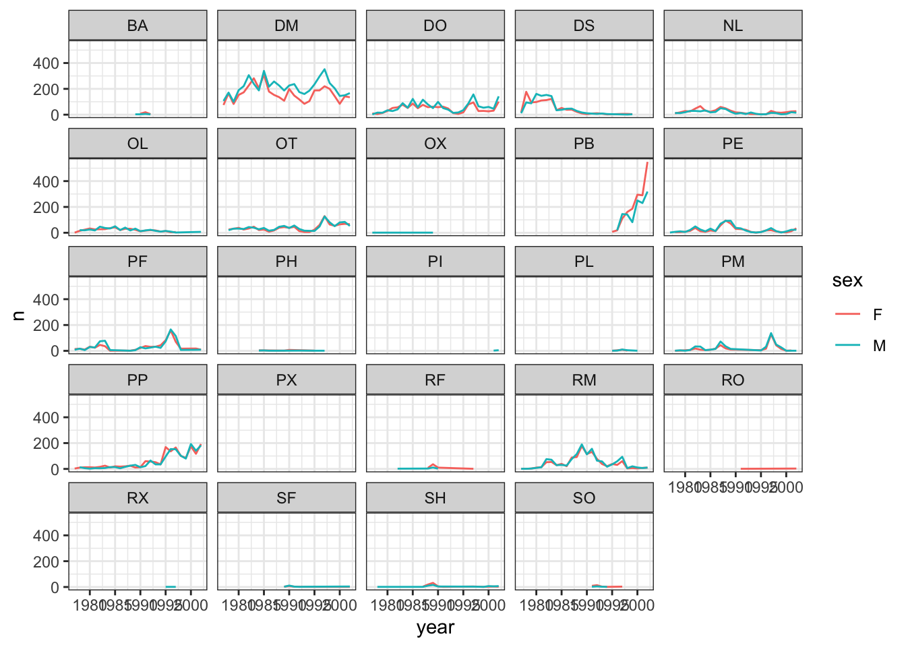
## This is an untitled chart with no subtitle or caption.
## The chart is comprised of 24 panels containing sub-charts, arranged horizontally.
## The panels represent different values of species_id.
## Each sub-chart has x-axis 'year' with labels 1980, 1985, 1990, 1995 and 2000.
## Each sub-chart has y-axis 'n' with labels 0, 200 and 400.
## There is a legend indicating colour is used to show sex, with 2 levels:
## F shown as strong reddish orange colour and
## M shown as brilliant bluish green colour.
## Panel 1 represents data for species_id = BA.
## Panel 1 is a set of 2 lines.
## Line 1 connects 3 points, at (1990, 8), (1991, 19) and (1992, 4).
## This line has colour strong reddish orange which maps to sex = F.
## Line 2 connects 4 points, at (1989, 3), (1990, 3), (1991, 6) and (1992, 2).
## This line has colour brilliant bluish green which maps to sex = M.
## Panel 2 represents data for species_id = DM.
## Panel 2 is a set of 2 lines.
## Line 1 connects 26 points.
## This line has colour strong reddish orange which maps to sex = F.
## Line 2 connects 26 points.
## This line has colour brilliant bluish green which maps to sex = M.
## Panel 3 represents data for species_id = DO.
## Panel 3 is a set of 2 lines.
## Line 1 connects 26 points.
## This line has colour strong reddish orange which maps to sex = F.
## Line 2 connects 26 points.
## This line has colour brilliant bluish green which maps to sex = M.
## Panel 4 represents data for species_id = DS.
## Panel 4 is a set of 2 lines.
## Line 1 connects 21 points.
## This line has colour strong reddish orange which maps to sex = F.
## Line 2 connects 19 points.
## This line has colour brilliant bluish green which maps to sex = M.
## Panel 5 represents data for species_id = NL.
## Panel 5 is a set of 2 lines.
## Line 1 connects 24 points.
## This line has colour strong reddish orange which maps to sex = F.
## Line 2 connects 25 points.
## This line has colour brilliant bluish green which maps to sex = M.
## Panel 6 represents data for species_id = OL.
## Panel 6 is a set of 2 lines.
## Line 1 connects 21 points.
## This line has colour strong reddish orange which maps to sex = F.
## Line 2 connects 21 points.
## This line has colour brilliant bluish green which maps to sex = M.
## Panel 7 represents data for species_id = OT.
## Panel 7 is a set of 2 lines.
## Line 1 connects 25 points.
## This line has colour strong reddish orange which maps to sex = F.
## Line 2 connects 25 points.
## This line has colour brilliant bluish green which maps to sex = M.
## Panel 8 represents data for species_id = OX.
## Panel 8 is a set of 2 lines.
## Line 1 connects 1 points, at (1977, 1).
## This line has colour strong reddish orange which maps to sex = F.
## Line 2 connects 4 points, at (1977, 1), (1982, 1), (1984, 1) and (1989, 1).
## This line has colour brilliant bluish green which maps to sex = M.
## Panel 9 represents data for species_id = PB.
## Panel 9 is a set of 2 lines.
## Line 1 connects 8 points, at (1995, 7), (1996, 19), (1997, 110), (1998, 161), (1999, 186), (2000, 295), (2001, 290) and (2002, 549).
## This line has colour strong reddish orange which maps to sex = F.
## Line 2 connects 7 points, at (1996, 19), (1997, 145), (1998, 141), (1999, 82), (2000, 250), (2001, 230) and (2002, 319).
## This line has colour brilliant bluish green which maps to sex = M.
## Panel 10 represents data for species_id = PE.
## Panel 10 is a set of 2 lines.
## Line 1 connects 25 points.
## This line has colour strong reddish orange which maps to sex = F.
## Line 2 connects 26 points.
## This line has colour brilliant bluish green which maps to sex = M.
## Panel 11 represents data for species_id = PF.
## Panel 11 is a set of 2 lines.
## Line 1 connects 23 points.
## This line has colour strong reddish orange which maps to sex = F.
## Line 2 connects 22 points.
## This line has colour brilliant bluish green which maps to sex = M.
## Panel 12 represents data for species_id = PH.
## Panel 12 is a set of 2 lines.
## Line 1 connects 5 points, at (1984, 4), (1989, 2), (1990, 7), (1992, 5) and (1995, 2).
## This line has colour strong reddish orange which maps to sex = F.
## Line 2 connects 7 points, at (1984, 2), (1985, 3), (1986, 1), (1988, 1), (1992, 2), (1995, 1) and (1997, 1).
## This line has colour brilliant bluish green which maps to sex = M.
## Panel 13 represents data for species_id = PI.
## Panel 13 is a set of 1 line.
## Line 1 connects 2 points, at (2001, 2) and (2002, 5).
## This line has colour brilliant bluish green which maps to sex = M.
## Panel 14 represents data for species_id = PL.
## Panel 14 is a set of 2 lines.
## Line 1 connects 4 points, at (1995, 1), (1996, 4), (1997, 9) and (1998, 2).
## This line has colour strong reddish orange which maps to sex = F.
## Line 2 connects 5 points, at (1995, 1), (1996, 2), (1997, 10), (1998, 5) and (2000, 1).
## This line has colour brilliant bluish green which maps to sex = M.
## Panel 15 represents data for species_id = PM.
## Panel 15 is a set of 2 lines.
## Line 1 connects 18 points.
## This line has colour strong reddish orange which maps to sex = F.
## Line 2 connects 19 points.
## This line has colour brilliant bluish green which maps to sex = M.
## Panel 16 represents data for species_id = PP.
## Panel 16 is a set of 2 lines.
## Line 1 connects 26 points.
## This line has colour strong reddish orange which maps to sex = F.
## Line 2 connects 25 points.
## This line has colour brilliant bluish green which maps to sex = M.
## Panel 17 represents data for species_id = PX.
## Panel 17 is a set of 2 lines.
## Line 1 connects 1 points, at (1997, 1).
## This line has colour strong reddish orange which maps to sex = F.
## Line 2 connects 1 points, at (1997, 1).
## This line has colour brilliant bluish green which maps to sex = M.
## Panel 18 represents data for species_id = RF.
## Panel 18 is a set of 2 lines.
## Line 1 connects 4 points, at (1988, 8), (1989, 36), (1990, 10) and (1997, 1).
## This line has colour strong reddish orange which maps to sex = F.
## Line 2 connects 4 points, at (1982, 2), (1988, 3), (1989, 11) and (1990, 2).
## This line has colour brilliant bluish green which maps to sex = M.
## Panel 19 represents data for species_id = RM.
## Panel 19 is a set of 2 lines.
## Line 1 connects 26 points.
## This line has colour strong reddish orange which maps to sex = F.
## Line 2 connects 26 points.
## This line has colour brilliant bluish green which maps to sex = M.
## Panel 20 represents data for species_id = RO.
## Panel 20 is a set of 2 lines.
## Line 1 connects 2 points, at (1991, 1) and (2002, 3).
## This line has colour strong reddish orange which maps to sex = F.
## Line 2 connects 1 points, at (2002, 4).
## This line has colour brilliant bluish green which maps to sex = M.
## Panel 21 represents data for species_id = RX.
## Panel 21 is a set of 1 line.
## Line 1 connects 2 points, at (1995, 1) and (1997, 1).
## This line has colour brilliant bluish green which maps to sex = M.
## Panel 22 represents data for species_id = SF.
## Panel 22 is a set of 2 lines.
## Line 1 connects 5 points, at (1989, 3), (1990, 7), (1991, 3), (1993, 1) and (2002, 1).
## This line has colour strong reddish orange which maps to sex = F.
## Line 2 connects 6 points, at (1989, 2), (1990, 11), (1991, 3), (1992, 1), (1993, 2) and (2002, 4).
## This line has colour brilliant bluish green which maps to sex = M.
## Panel 23 represents data for species_id = SH.
## Panel 23 is a set of 2 lines.
## Line 1 connects 9 points, at (1987, 3), (1988, 19), (1989, 32), (1990, 5), (1991, 1), (1997, 4), (1999, 1), (2001, 4) and (2002, 2).
## This line has colour strong reddish orange which maps to sex = F.
## Line 2 connects 12 points.
## This line has colour brilliant bluish green which maps to sex = M.
## Panel 24 represents data for species_id = SO.
## Panel 24 is a set of 2 lines.
## Line 1 connects 5 points, at (1991, 9), (1992, 14), (1993, 3), (1994, 1) and (1997, 3).
## This line has colour strong reddish orange which maps to sex = F.
## Line 2 connects 4 points, at (1991, 2), (1992, 5), (1993, 2) and (1994, 1).
## This line has colour brilliant bluish green which maps to sex = M.Challenge 2
Use what you just learned to create a plot that depicts how the average weight of each species changes through the years.
ANSWER
#create a new dataframe
yearly_weight <- surveys_complete %>%
group_by(year, species_id) %>%
summarize(avg_weight = mean(weight))## `summarise()` has grouped output by 'year'. You can override
## using the `.groups` argument.ggplot(data = yearly_weight, mapping = aes(x=year, y=avg_weight)) +
geom_line() +
facet_wrap(~ species_id) +
theme_bw()## `geom_line()`: Each group consists of only one observation.
## ℹ Do you need to adjust the group aesthetic?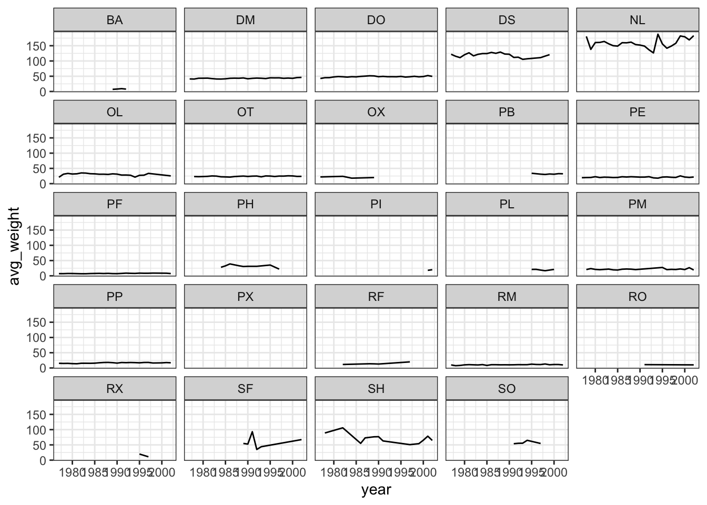
## This is an untitled chart with no subtitle or caption.
## The chart is comprised of 24 panels containing sub-charts, arranged horizontally.
## The panels represent different values of species_id.
## Each sub-chart has x-axis 'year' with labels 1980, 1985, 1990, 1995 and 2000.
## Each sub-chart has y-axis 'avg_weight' with labels 0, 50, 100 and 150.
## Panel 1 represents data for species_id = BA.
## Panel 1 is a set of 1 line.
## Line 1 connects 4 points, at (1989, 7), (1990, 8), (1991, 9.24) and (1992, 7.83).
## Panel 2 represents data for species_id = DM.
## Panel 2 is a set of 1 line.
## Line 1 connects 26 points.
## Panel 3 represents data for species_id = DO.
## Panel 3 is a set of 1 line.
## Line 1 connects 26 points.
## Panel 4 represents data for species_id = DS.
## Panel 4 is a set of 1 line.
## Line 1 connects 21 points.
## Panel 5 represents data for species_id = NL.
## Panel 5 is a set of 1 line.
## Line 1 connects 25 points.
## Panel 6 represents data for species_id = OL.
## Panel 6 is a set of 1 line.
## Line 1 connects 22 points.
## Panel 7 represents data for species_id = OT.
## Panel 7 is a set of 1 line.
## Line 1 connects 25 points.
## Panel 8 represents data for species_id = OX.
## Panel 8 is a set of 1 line.
## Line 1 connects 4 points, at (1977, 22), (1982, 24), (1984, 18) and (1989, 20).
## Panel 9 represents data for species_id = PB.
## Panel 9 is a set of 1 line.
## Line 1 connects 8 points, at (1995, 34), (1996, 32.58), (1997, 31.14), (1998, 30.13), (1999, 31.68), (2000, 30.88), (2001, 32.78) and (2002, 32.36).
## Panel 10 represents data for species_id = PE.
## Panel 10 is a set of 1 line.
## Line 1 connects 26 points.
## Panel 11 represents data for species_id = PF.
## Panel 11 is a set of 1 line.
## Line 1 connects 23 points.
## Panel 12 represents data for species_id = PH.
## Panel 12 is a set of 1 line.
## Line 1 connects 9 points, at (1984, 28), (1985, 32.67), (1986, 39), (1988, 33), (1989, 30.5), (1990, 31.14), (1992, 31.14), (1995, 35.33) and (1997, 22).
## Panel 13 represents data for species_id = PI.
## Panel 13 is a set of 1 line.
## Line 1 connects 2 points, at (2001, 18) and (2002, 20).
## Panel 14 represents data for species_id = PL.
## Panel 14 is a set of 1 line.
## Line 1 connects 5 points, at (1995, 21), (1996, 21.17), (1997, 18.79), (1998, 16.71) and (2000, 21).
## Panel 15 represents data for species_id = PM.
## Panel 15 is a set of 1 line.
## Line 1 connects 20 points.
## Panel 16 represents data for species_id = PP.
## Panel 16 is a set of 1 line.
## Line 1 connects 26 points.
## Panel 17 represents data for species_id = PX.
## Panel 17 is a set of 1 line.
## Line 1 connects 1 points, at (1997, 19).
## Panel 18 represents data for species_id = RF.
## Panel 18 is a set of 1 line.
## Line 1 connects 5 points, at (1982, 11.5), (1988, 13.82), (1989, 13.49), (1990, 12.92) and (1997, 20).
## Panel 19 represents data for species_id = RM.
## Panel 19 is a set of 1 line.
## Line 1 connects 26 points.
## Panel 20 represents data for species_id = RO.
## Panel 20 is a set of 1 line.
## Line 1 connects 2 points, at (1991, 11) and (2002, 10.14).
## Panel 21 represents data for species_id = RX.
## Panel 21 is a set of 1 line.
## Line 1 connects 2 points, at (1995, 20) and (1997, 11).
## Panel 22 represents data for species_id = SF.
## Panel 22 is a set of 1 line.
## Line 1 connects 6 points, at (1989, 54.8), (1990, 52.61), (1991, 93.17), (1992, 35), (1993, 44) and (2002, 67.4).
## Panel 23 represents data for species_id = SH.
## Panel 23 is a set of 1 line.
## Line 1 connects 13 points.
## Panel 24 represents data for species_id = SO.
## Panel 24 is a set of 1 line.
## Line 1 connects 5 points, at (1991, 53.91), (1992, 55.26), (1993, 55.6), (1994, 65) and (1997, 54.67).Part 2: Data Visualization Best Practices
Data Visualization in R
There are many tips and tricks that are available for the multitude of visualization packages in R. However, there aren’t as many simple rules or suggestions on what actually makes a good visualization. This starts with the “grammar of graphics”, which is the fundamental rules or principals which describe an art or science (from Wickham 2010).
“A good grammar will allow us to gain insight into the composition of complicated graphics, and reveal unexpected connections between seemingly different graphics (Cox 1978)”
Because there are so many options and methods to plot our data in R, we need to think about how we are going to represent the data, how can that data be interpreted visually, and what story it may tell.
A very nice example of this is provided by this animation (created by Darkhorse Analytics, and used in Jenny Bryan’s excellent stat545 course). It shows how simplification can make a big difference in communication.
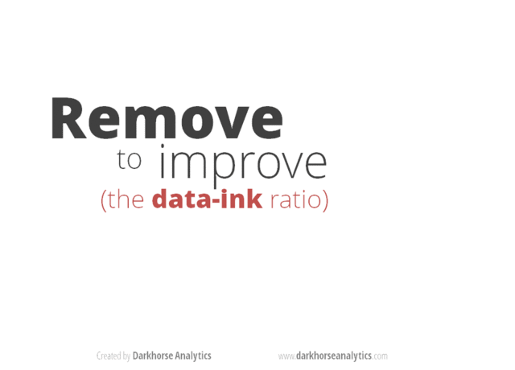
Exploration vs. Communication
One thing to consider is what the objective is when creating a
visualization or plot. When we build plots for exploratory purposes, we
already know what the variables are we are using, and the objective is
more about what sort of patterns the data might show. When
communicating, the objective is more about providing a stand-alone
snapshot which helps others understand what you are trying to
convey. We’ll cover more on this when we talk about
Rmarkdown.
ggplot2
While there are many visualization options in R, we believe the most
comprehensive and powerful is the ggplot2 package. Much of
the class has used/follows ggplot, so here’s a little
background that might be useful.
- Based on Grammar of Graphics book by Leland Wilkinson hence ‘gg’
- Each part of the plot is layered or built upon the other parts (like building legos).
- Consider parts of a
ggplot2as parts of a house.- Data = The materials the house is built from
(
ggplot(data=yourdata)) - Plot Type = The structure/design of your house (how will it look?)
(
geom_) - Aesthetics = What the exterior looks like, i.e., the paint/decor
(
aes()) - Stats = Ways to wire or plumb your house…how to tie your data
together, or transform it (
stat_)
- Data = The materials the house is built from
(
A questions we often get asked when helping students with ggplot figures is, how can I put two y-axis on my graph? Short answer, with ggplot, you can’t. There is a good reason for this though, which is basically that the creators of ggplot2 believe that duel y-axis are confusing, eaisly misunderstood and not invertible (given a point on the plot space, you can not uniquely map it back to a point in the data space). We agree with this logic, and would urge you to never put two differnt y-axis on the same plot. Instead, make two seperate graphs.
Color
There are so many options in R. It is fun to play around with color, but keep in mind not everyone sees color in the same way, and some folks cannot see certain spectrums of color (i.e., absence of blue or green receptors is common). See below for a example of what colorblindness may do…if you see numbers inside these circles, great, you have some blue/green retinal receptors.


Having said that, here’s a great cheat sheet of colors in R, it can be handy when trying to find the correct color or name of a color. Check out this recent Nature perspective piece on The misuse of colour in science communication.
Discrete/Categorical:
For a very nice discussion about color palettes, I recommend this page from the R cookbook folks.
Additionally, check out the great ggthemes
package, which has many options. One I find very helpful is using
scale_color_colorblind(), which if you have 8-9 categories,
may be a nice way to display your data.
Continuous: viridis
The viridis package is an excellent set of colors that
better represent your data, are easier to read for those with
colorblindness, and they also tend to print fairly well in
grayscale.
Take a look at the vignette online!
An example:
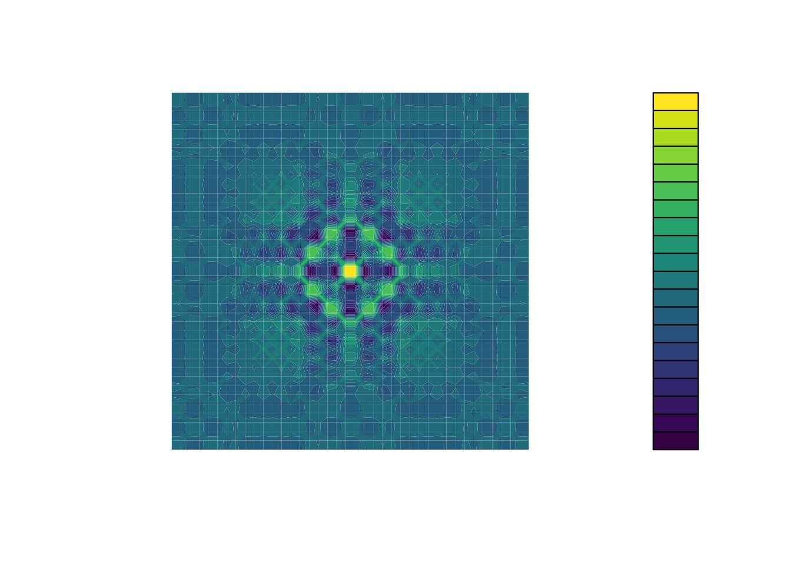
Customizing color pallettes in ggplot
The viridis color pallettes have been built into ggplot so that you can call upon them using the scale_fill_viridis_ or scale_color_viridis_ functions. Note that whether or not you use the fill or color scale function depends on which aesthetic you set in your plot. The functions also have extenstions depending on the kind of variable that you want to color: scale_fill_viridis_d is for discrete variables while scale_fill_viridis_c is for continous variables. Within the function, you can specify which virids pallette to use: A-D.
In this example we fill in our bars with the cut vairable in the diamond dataset, a categorical variable with 5 groups.
library(ggplot2)
ggplot(diamonds, aes(x = clarity, fill = cut)) +
geom_bar() +
theme(axis.text.x = element_text(angle=70, vjust=0.5)) +
scale_fill_viridis_d(option = "C") +
theme_classic()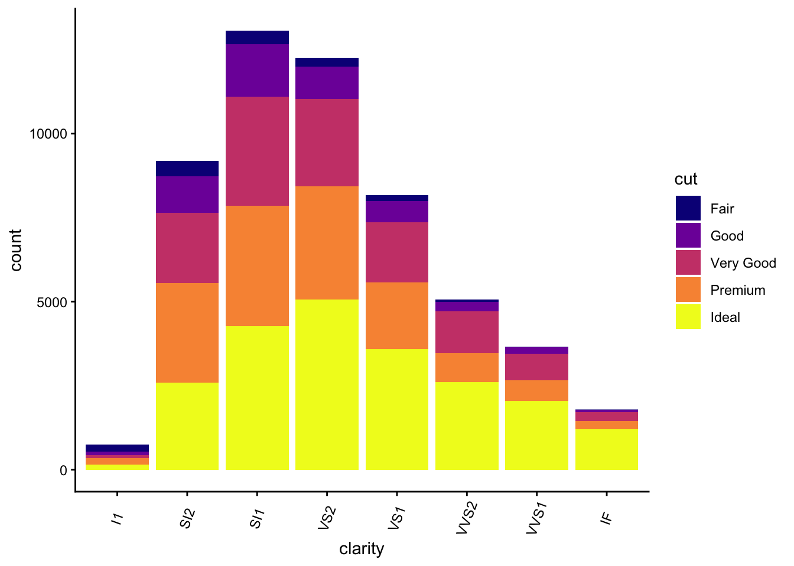
## This is an untitled chart with no subtitle or caption.
## It has x-axis 'clarity' with labels I1, SI2, SI1, VS2, VS1, VVS2, VVS1 and IF.
## It has y-axis 'count' with labels 0, 5000 and 10000.
## There is a legend indicating fill is used to show cut, with 5 levels:
## Fair shown as vivid purplish blue fill,
## Good shown as vivid purple fill,
## Very Good shown as vivid purplish red fill,
## Premium shown as brilliant orange fill and
## Ideal shown as brilliant greenish yellow fill.
## The chart is a bar chart with 8 vertical bars.
## These are stacked, as sorted by cut.Visualization Tips
This information isn’t meant to be comprehensive, but at minimum, it may provide some guidance when you are creating plots and figures.
Visualization Do’s
The most basic tip is keep it simple! Stick with a clean and clear message, what is your plot/figure trying to get across? Data visualization is effective when it is simple, and repackages data into a visual story that is easy to understand.
- Label appropriately and legibly, including axes, and use text to highlight important bits
- Use one color to represent each category, consider colorblind/BW friendly palettes
- Order datasets using logical heirarchy (Make it easy for reader to compare values)
- Use icons when possible to reduce unnecessary labeling
- Pay attention to scale (e.g., start axis at zero not 2.4 to 3.5)
- Include your data/outliers where possible
Visualization Don’ts
A few things to avoid (which basically relates to keeping it simple):
- Don’t try to add too much into one plot…keep it simple
- Don’t add color uncessarily unless it provides a specific function
- Avoid high contrast colors (red/green or blue/yellow)
- Don’t use 3D charts. They can make it hard to discern or perceive the actual information.
- Avoid ornamentation (shadowing, extra illustration, etc)
- Avoid more than 6 categorical colors in a layout unless you looking at continuous data.
- Keep fonts simple (avoid uncessary bold or italicization)
- Don’t try to compare too many categories or data types in one chart
Examples
Scatterplots
One of the best simple plots for examining patterns in data, but very effective. Also used when adding model trend lines.
suppressPackageStartupMessages(library(ggplot2))
plot(x=iris$Petal.Width) # single variable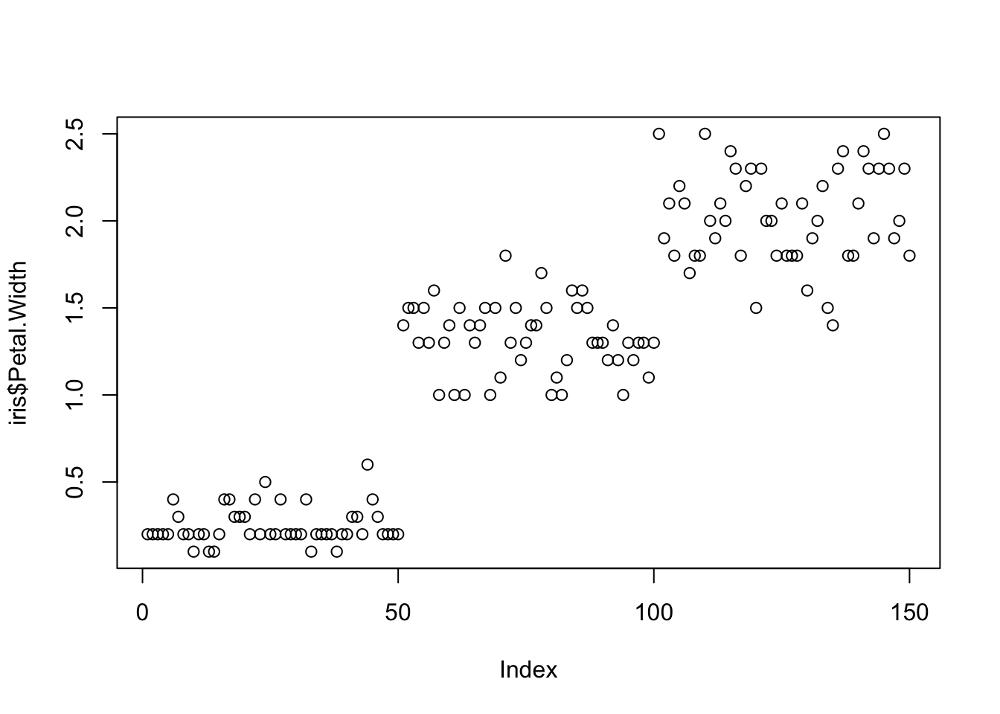
plot(x=iris$Petal.Width, y=iris$Petal.Length) # multiple variablesggplot() + geom_point(data=iris, aes(x=Petal.Width, y=Petal.Length))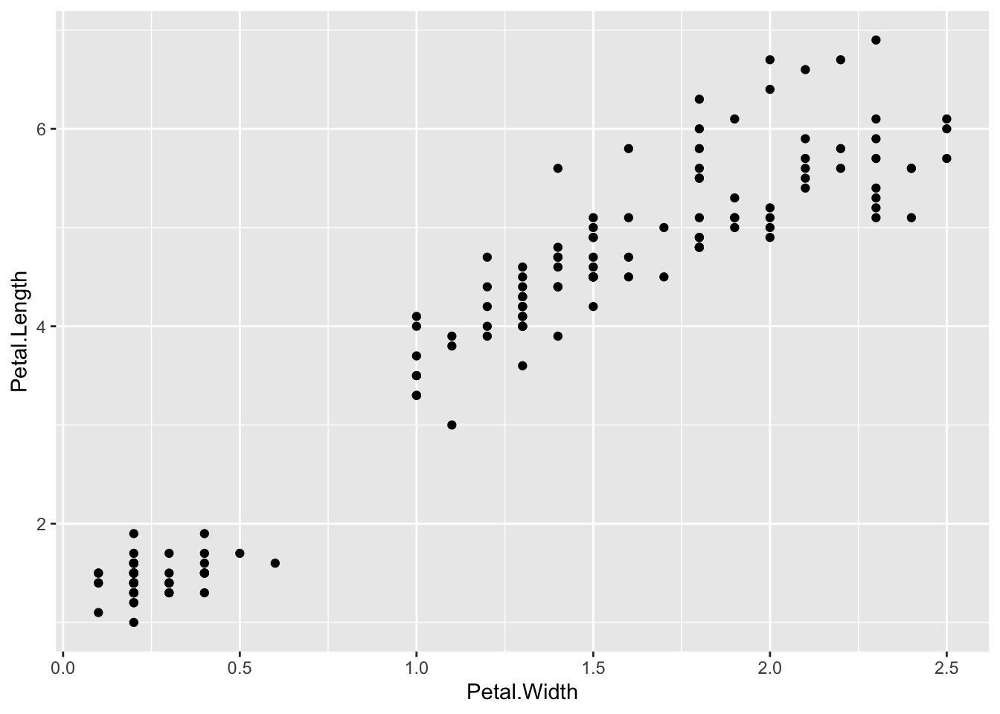
## This is an untitled chart with no subtitle or caption.
## It has x-axis 'Petal.Width' with labels 0.0, 0.5, 1.0, 1.5, 2.0 and 2.5.
## It has y-axis 'Petal.Length' with labels 2, 4 and 6.
## The chart is a set of 150 big solid circle points of which about 68% can be seen.ggplot() + geom_point(data=iris, aes(x=Petal.Width, y=Petal.Length, fill=Species), pch=21, size=3, alpha=0.5)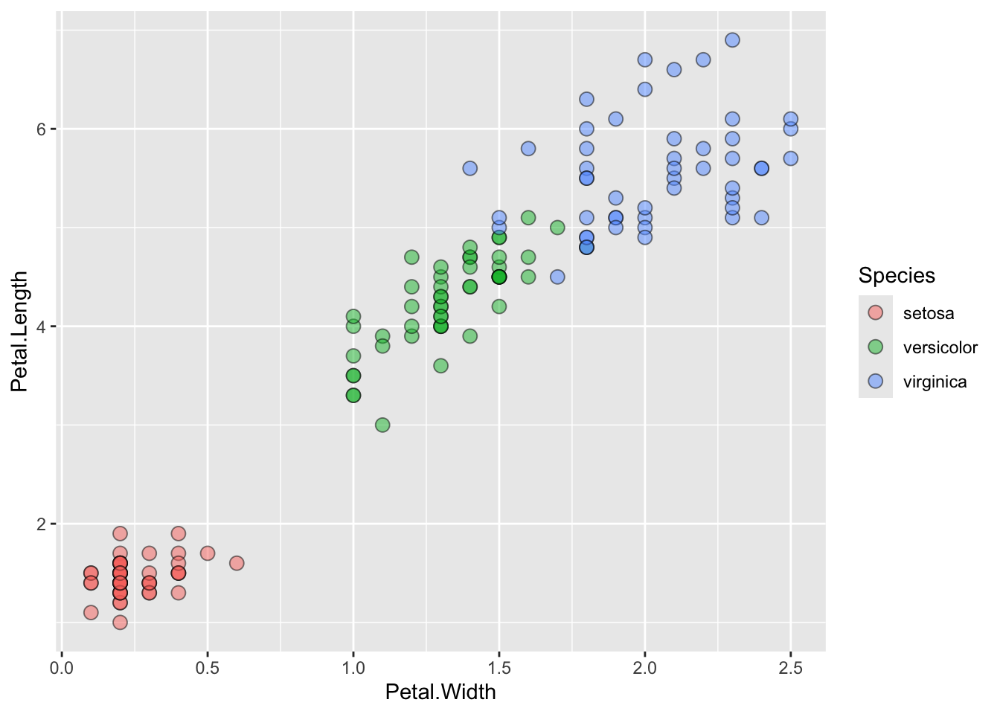
## This is an untitled chart with no subtitle or caption.
## It has x-axis 'Petal.Width' with labels 0.0, 0.5, 1.0, 1.5, 2.0 and 2.5.
## It has y-axis 'Petal.Length' with labels 2, 4 and 6.
## There is a legend indicating fill is used to show Species, with 3 levels:
## setosa shown as strong reddish orange fill,
## versicolor shown as vivid yellowish green fill and
## virginica shown as brilliant blue fill.
## The chart is a set of 150 fillable circle points of which about 68% can be seen.
## It has shape set to fillable circle.
## It has size set to 3.
## It has alpha set to 0.5.Lineplots
Comparing relative change in quantities across a variable like time. Note the change when we avoid facetting each line independently.
plot(EuStockMarkets)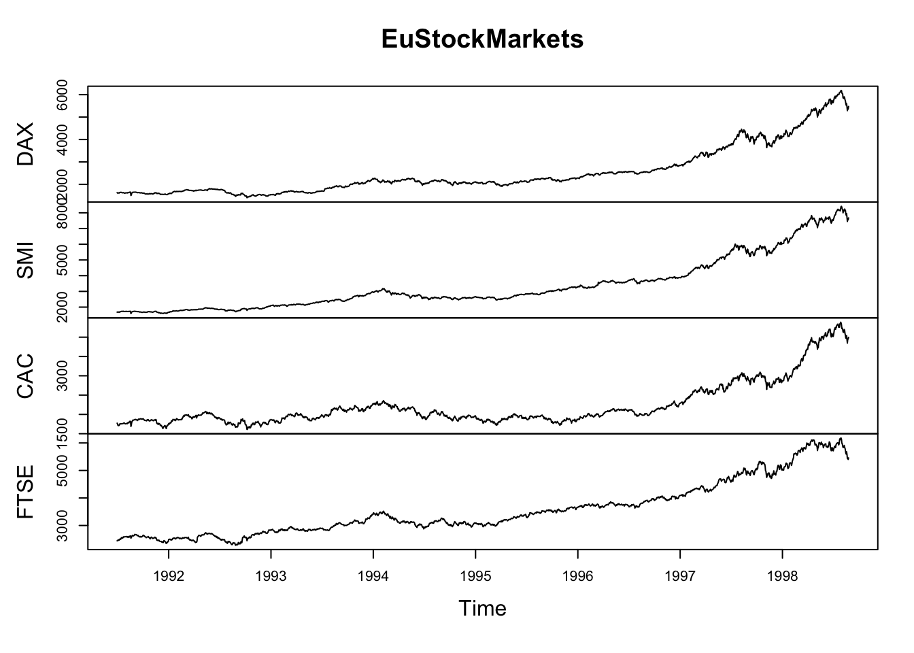
suppressPackageStartupMessages(library(tidyverse))
EuStockMarkets_df <- data.frame(as.matrix(EuStockMarkets), date=as.numeric(time(EuStockMarkets)))
EuStockMarkets_long <- gather(data = EuStockMarkets_df, key = "Market", value="value", 1:4)
ggplot() + geom_line(data=EuStockMarkets_long, aes(x=date, y=value, color=Market))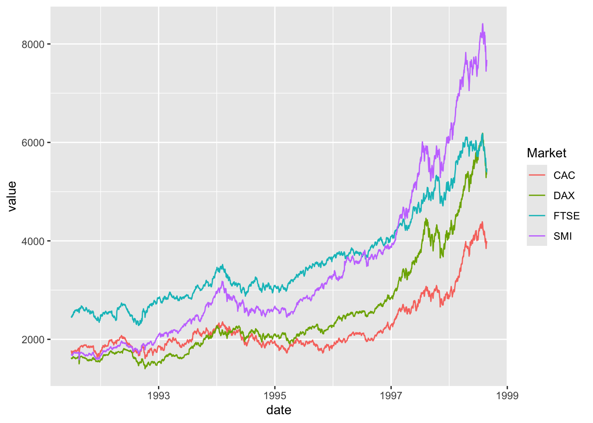
## This is an untitled chart with no subtitle or caption.
## It has x-axis 'date' with labels 1993, 1995, 1997 and 1999.
## It has y-axis 'value' with labels 2000, 4000, 6000 and 8000.
## There is a legend indicating colour is used to show Market, with 4 levels:
## CAC shown as strong reddish orange colour,
## DAX shown as vivid yellow green colour,
## FTSE shown as brilliant bluish green colour and
## SMI shown as vivid violet colour.
## The chart is a set of 4 lines.
## Line 1 connects 1860 points.
## This line has colour strong reddish orange which maps to Market = CAC.
## Line 2 connects 1860 points.
## This line has colour vivid yellow green which maps to Market = DAX.
## Line 3 connects 1860 points.
## This line has colour brilliant bluish green which maps to Market = FTSE.
## Line 4 connects 1860 points.
## This line has colour vivid violet which maps to Market = SMI.Barplots
Comparing totals across multiple groups. Notice legibility when you stack the bars.
# code adpated from https://www.analyticsvidhya.com/blog/2015/07/guide-data-visualization-r/
suppressPackageStartupMessages(library(viridis))
barplot(iris$Petal.Length)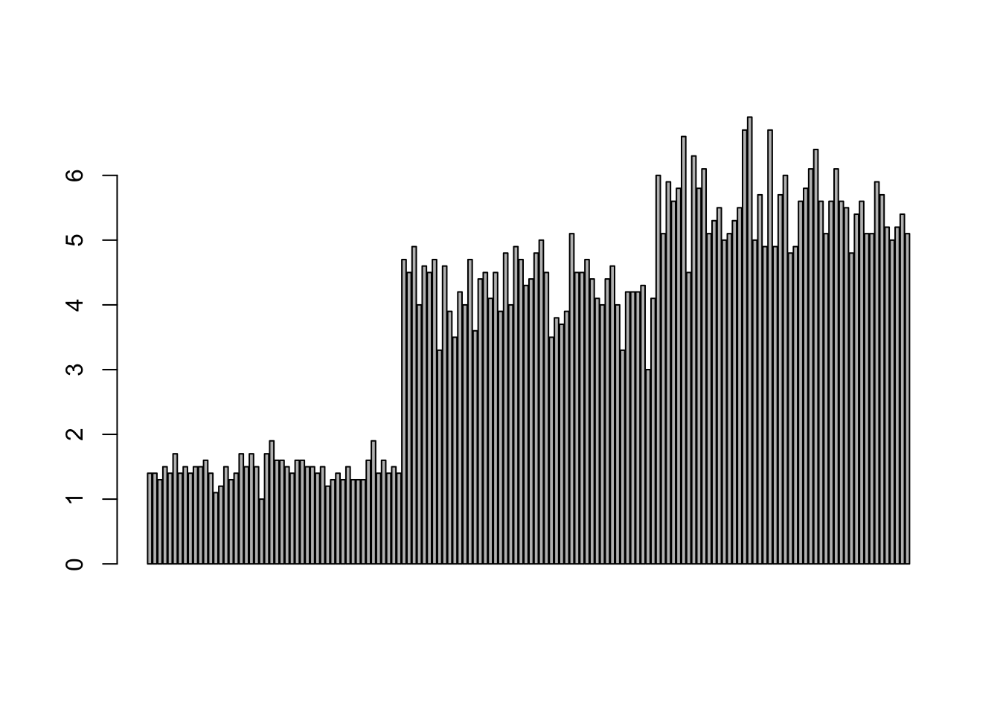
barplot(iris$Sepal.Length,col = viridis(3, option = "A")) 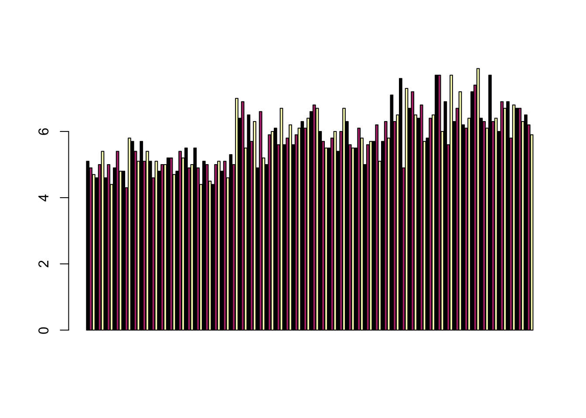
barplot(table(iris$Species,iris$Sepal.Length),col = viridis(3, option = "A")) 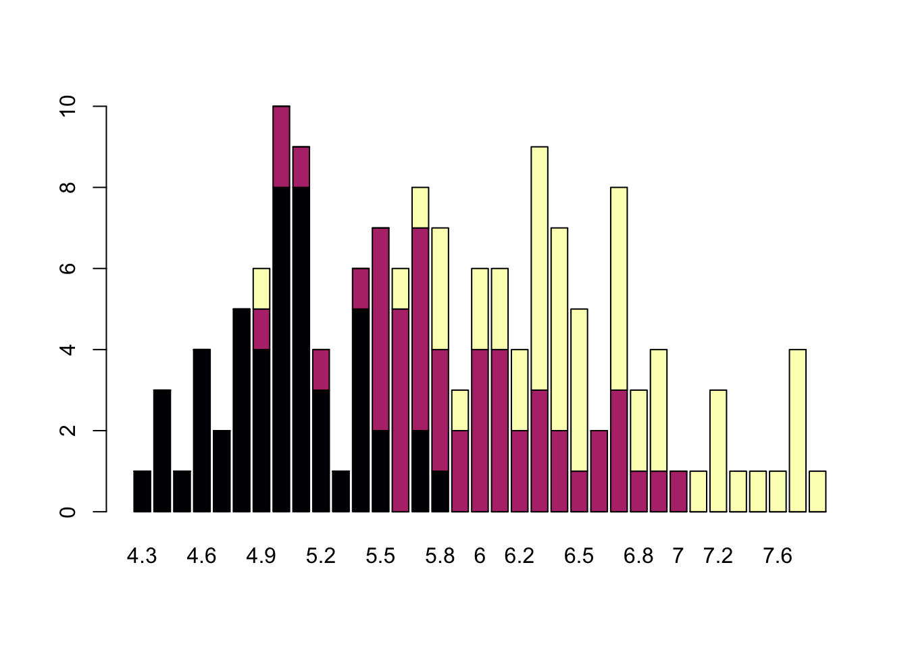
Non-visual data interaction
Discussions of visualization so far have taken for granted that visualization is accessible to everyone, but researchers and audiences alike are not all sighted. RStudio is behind on blind accessibility, but some packages can provide text descriptions and sonification/audification of plots to improve accessibility for non-visual data interaction.
The BrailleR package (read more
here), has a VI() function that wraps around plots and
provides a text-description output. We can use the VI wrapper to
interact with our plots from a textual perspective and identify what
information is missing. Such text can also be used as alt-text when
publishing this material. What could we do to our plot to improve the
text description?
#install.packages("BrailleR")
library(BrailleR)
barplot <- ggplot(diamonds, aes(x = clarity, fill = cut)) +
geom_bar() +
theme(axis.text.x = element_text(angle=70, vjust=0.5)) +
scale_fill_viridis_d(option = "C") +
theme_classic()
VI(barplot)## This is an untitled chart with no subtitle or caption.
## It has x-axis 'clarity' with labels I1, SI2, SI1, VS2, VS1, VVS2, VVS1 and IF.
## It has y-axis 'count' with labels 0, 5000 and 10000.
## There is a legend indicating fill is used to show cut, with 5 levels:
## Fair shown as vivid purplish blue fill,
## Good shown as vivid purple fill,
## Very Good shown as vivid purplish red fill,
## Premium shown as brilliant orange fill and
## Ideal shown as brilliant greenish yellow fill.
## The chart is a bar chart with 8 vertical bars.
## These are stacked, as sorted by cut.The sonification package’s sonify function
can be used to represent data in audio form, where the x-axis can span
sound across time, so that the length of time a sound plays follows the
data long the x-axis from left to right; the y-axis can be expressed as
pitch, so that the pitch of the sound matches to the values of the data
(lower value = lower pitch).
One variable can be used as an input to hear the distribution. For instance this univariate plot of iris petal width visually looks like this:
plot(iris$Petal.Width)Using sonify instead of plot, the distribution of iris
petal width sounds like this:
#install.packages("sonify")
library(sonify)
sonify(iris$Petal.Width)If you try this on your computer it should play autmatically, buy on the website you can listen below:
Two variables can be used as input to hear the relationship between continuous variables. For instance this bivariate plot of iris petal length and petal width visually looks like this:
plot(x = iris$Petal.Width, y = iris$Petal.Length)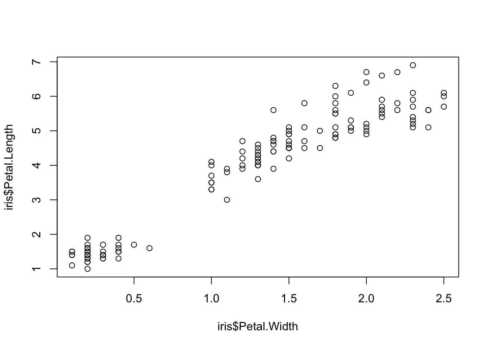
And using sonify, sounds like this:
sonify(x=iris$Petal.Width, y = iris$Petal.Length) Publishing Plots: cowplot
A few excellent options exist for creating multi-paneled plots for
publications. The first and foremost is a package by Claus Wilke called
cowplot.
With cowplot, it’s possible to quickly combine existing
ggplots, creating publication quality plots. See the
vignette for more options, but here’s a quick example from the vignette
below:
detach("package:BrailleR", unload=TRUE)library(cowplot)
# make a few plots:
plot.diamonds <- ggplot(diamonds, aes(clarity, fill = cut)) +
geom_bar() +
theme(axis.text.x = element_text(angle=70, vjust=0.5))
#plot.diamonds
plot.cars <- ggplot(mpg, aes(x = cty, y = hwy, colour = factor(cyl))) +
geom_point(size = 2.5)
#plot.cars
plot.iris <- ggplot(data=iris, aes(x=Sepal.Length, y=Petal.Length, fill=Species)) +
geom_point(size=3, alpha=0.7, shape=21)
#plot.iris
# use plot_grid
panel_plot <- plot_grid(plot.cars, plot.iris, plot.diamonds, labels=c("A", "B", "C"), ncol=2, nrow = 2)
panel_plot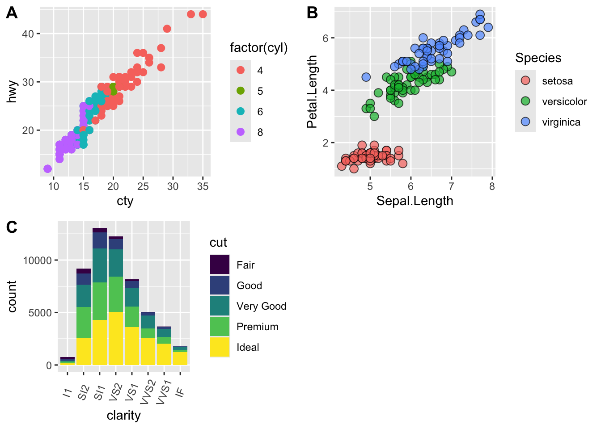
# fix the sizes draw_plot
fixed_gridplot <- ggdraw() + draw_plot(plot.iris, x = 0, y = 0, width = 1, height = 0.5) +
draw_plot(plot.cars, x=0, y=.5, width=0.5, height = 0.5) +
draw_plot(plot.diamonds, x=0.5, y=0.5, width=0.5, height = 0.5) +
draw_plot_label(label = c("A","B","C"), x = c(0, 0.5, 0), y = c(1, 1, 0.5))
fixed_gridplot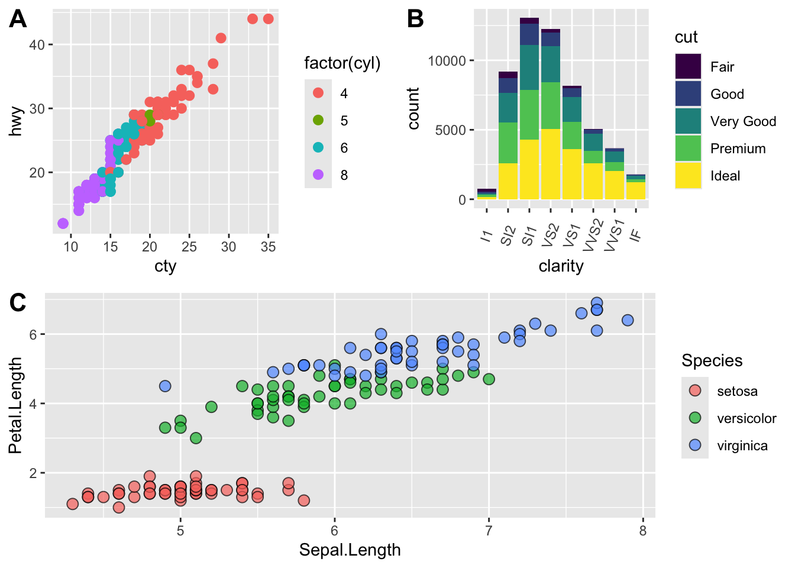
Saving Figures and Plots
A plot you created with ggplot or another plotting package can be
saved as .JPEGS (or .tiff, .img, etc) onto you. For any ggplot objects,
we recommend using ggsave.
First, let’s create a new folder in this project called
figures. Let’s save all the figures we create to that
folder. ggsave will default to saving the last plot you
created, however, we think it is always a good idea to specify exactly
which plot you want saved. To do that, we have to save our plot as an
object.
ggsave("figures/gridplot.png", fixed_gridplot)With ggsave you can save images as
- .png, .jpeg, .tiff, .pdf, .bmp, or .svg
Other arguments of ggsave
scalecan scale the image (multiplicative scaling factor)widthandheightlet you specify the size of the image inunitsthat you specifydpican change the quality of the image; for publication graphs we suggest over 700 dpi
ggsave("figures/gridplot.png", fixed_gridplot, width = 6, height = 4, units = "in", dpi = 700)The package plotly
The package plotly is an excellent, easy to use resource
that allows you to quickly create interactive, web-based figures. We
have used plotly to illustrate patterns in data to collaborators, to
visualize patterns in our data during the pre-analysis stage, and even
impress with “fancy” graphics during a conference talk!
Let’s try plotly together using some of the iris
data:
library(plotly)
plot.iris <- ggplot(data=iris, aes(x=Sepal.Length, y=Petal.Length, fill=Species)) +
geom_point(size=3, alpha=0.7, shape=21)
plotly::ggplotly(plot.iris) #it's as simple as that! This lesson was contributed by Martha Zillig.
This lesson is adapted from the Software Carpentry: R for Reproducible Scientific Analysis Vectors and Data Frames materials and the Data Carpentry: R for Data Analysis and Visualization of Ecological Data Exporting Data materials.